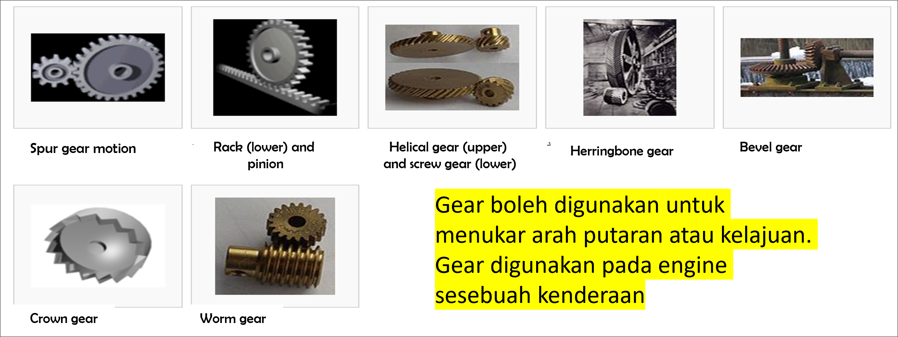

Definisi
The Origin of Karakuri
KARAKURI originally came from Japanese KARAKURI NINGYO, a traditional handcraft from Edo period [1603 -1868]
Karakuri asalnya berasal dari Jepun Karakuri Ningyo, kraftangan tradisional dari zaman Edo
Since then Karakuri is a statue of privilege in machine engineering
Sejak itu Karakuri adalah patung keistimewaan dalam kejuruteraan mesin
[ROBOT MOVES USING TWO FEET]
[ROBOT BERGERAK MENGGUNAKAN DUA KAKI]
The movements are created using straps, pulleys,weights that can perform various movements continuously
Pergerakan di buat menggunakan tali, takal, berat yang boleh melakukan pelbagai pergerakan secara berterusan
Karakuri Doll
Robot Tea Lady
Purpose of Karakuri
Apa Tujuan Karakuri?
Do kaizen by oneself through the process of thinking, building and using it
Lakukan kaizen sendiri melalui proses berfikir, membina dan menggunakannya
Able to respond faster to henkaten - Easy maintenance
Mampu bertindak balas dengan segera kepada perubahan - penyelenggaraan yang mudah
To create a conducive work place and to make people happy
Untuk mewujudkan tempat kerja yang kondusif dan menggembirakan orang ramai
Benefit of Karakuri
Can SAVE ENERGY [Electricity & Air]

Reduce OPERATION COST
Reduce BURDEN

Reduce MOVEMENT

Reduce SPACE
Mekanisme dan Punca Tenaga
Mekanisme
Punca Tenaga
Mekanisme Link
Mekanisme link terdiri dari kombinasi beberapa batang rod yang disambungkan dengan pin.
Soalan Mekanisme Link
QR-Code
Aplikasi Mekanisme Link
Pergerakan selari wiper kereta
Mekanisme Pulley Tetap
Shaf pulley tetap. Samada shaf dimatikan atau sambungan memang sedemikian. Daya pada tali berlawanan dengan arah beban. Jika diabaikan berat tali, daya untuk kedua-dua belah tali adalah sama.
Soalan Mekanisme Pulley
1. Berapakah berat A untuk mendapatkan keseimbangan pemberat disebelah?
（Abaikan berat takal dan berat tali)
2. Berapakah nilai P untuk mendapatkan keseimbangan pemberat disebelah?
（ Abaikan berat takal dan berat tali )
Mekanisme Lever
Point Penting
Soalan Mekanisme Lever
Tekan gambar untuk melihat jawapan
Mekanisme Gear
Gear adalah roda bergigi yang memindahkan kuasa dan merupakan satu elemen untuk mesin. Digunakan untuk menambah @ mengurangkan halaju, mengubah arah shaf, mengubah arah pusingan shaf dan pengagihan kuasa. 
Soalan Mekanisme Gear
Gear hadapan ada 60 gigi, gear belakang ada 15 gigi. Jika satu pusingan pedal dikayuh,berapa pusingan roda belakang?
Mekanisme Cam
Dipasang pada shaf, shaf berputar dan menghasilkan pergerakan yang mengikut bentuk cam dalam sudut tertentu. Secara amnya ia dipanggil disk cam dimana keadaan disk tersebut tidak seragam (berbentuk seperti telur) yang menghasilkan pergerakan mengikut bentuk cam tersebut.

Mekanisme Pulley & Belt
Digunakan untuk memindahkan kuasa dari pemacu ke shaf lain. Pulley adalah alat yang dipasangkan padanya tali sawat.
Mekanisme Slant
Kegunaan karakuri kaizen yang berlain cara.
Bahan berputar 90 darjah
Ubah arah pergerakan dengan berat bahan sendiri
Penggunaan lifter dan permukaan condong untuk gerakkan bahan